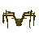
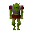
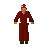
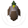
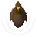
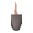
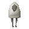

Lumbridge
Town at 3239, 3233 · Kingdom Of Misthalin
Open on the world map → Open in knowledge graph → Below: Lumbridge (underground)
NPCs
| NPC | Level | Spawns | Notable drops |
|---|---|---|---|
 Giant spider | 2 | 2 | |
 Goblin | 2 | 12 | Coins, Water rune, Body rune, Goblin mail |
 Imp | 2 | 1 | Bolt, Wizards hat, Hammer, Ball of wool |
| 2 | 2 | Coins, Herb drop table, Bolt, Fishing bait | |
| 2 | 1 | Coins, Herb drop table, Bolt, Fishing bait | |
| 2 | 2 | Coins, Herb drop table, Bolt, Fishing bait | |
| 2 | 1 | Coins, Herb drop table, Bolt, Fishing bait | |
 Duck | 1 | 9 | |
 Duck | 1 | 5 | |
 Rat | 1 | 3 | |
| Butterfly | 1 | ||
| 2 | |||
 Sheep | 5 | ||
| shop | 1 | ||
| shop | 1 |